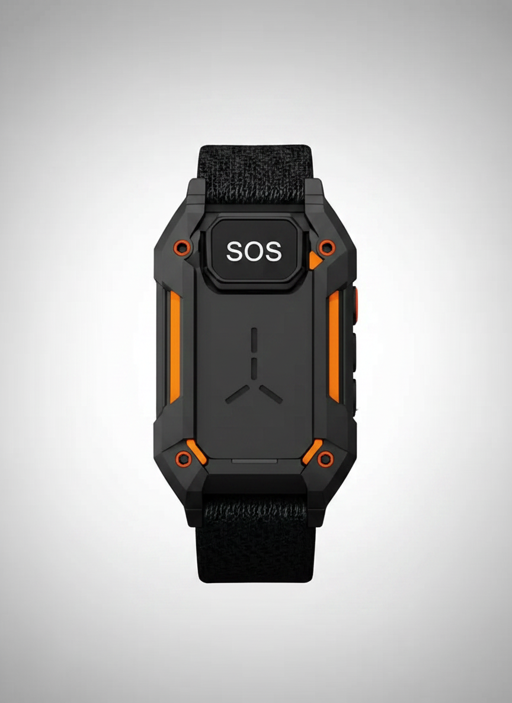

감지
팔찌가 위치, 움직임, 생체 상태와 주변 환경을 지속적으로 측정합니다. 평상시에는 저전력으로 조용히 대원의 상태를 살핍니다.
화재와 붕괴 현장에서는 짙은 연기, 높은 소음, 통신 장애와 구조물로 인해 대원의 위치와 상태를 즉시 확인하기 어렵습니다. 대원이 부상을 입거나 의식을 잃으면 무전기를 사용하거나 직접 구조 요청을 보내는 것조차 불가능할 수 있습니다.
짙은 연기와 분진 속에서는 동료의 위치와 상태를 눈으로 확인하기 어렵습니다.
장비 소음과 붕괴음 속에서 음성 교신은 끊기거나 전달되지 않습니다.
두꺼운 구조물 내부에서는 위성 신호가 약해져 위치가 부정확해집니다.
추락이나 충격으로 의식을 잃으면 스스로 구조를 요청할 수 없습니다.
일산화탄소와 산소 부족은 자각하기 전에 판단력을 흐리게 만듭니다.
요청이 늦어질수록 대원을 찾고 구조하는 데 걸리는 시간이 길어집니다.
RESCUE BAND는 대원의 상태와 주변 환경을 끊임없이 감지하고, 위험이 확인되면 외부 지휘본부로 정보를 전송합니다. 착용자가 직접 요청하지 못하는 순간에도 구조의 흐름은 멈추지 않습니다.
두꺼운 방화 장갑을 착용한 상태에서도 누를 수 있는 대형 SOS 버튼을 적용합니다. 버튼을 일정 시간 길게 누르면 착용자의 위치, 생체 정보와 주변 환경 정보를 지휘본부에 즉시 전송합니다. 오작동 방지를 위해 보호 구조와 길게 누르는 방식을 적용합니다.
가속도 센서와 자이로 센서를 통해 추락이나 강한 충격을 감지합니다. 충격 이후 움직임이 없으면 팔찌가 강한 진동으로 반응을 확인합니다. 대원이 버튼을 누르거나 움직이지 않으면 자동으로 긴급 신호를 전송합니다.
실외에서는 GPS를 활용하고, 건물 내부에서는 고도 변화, 이동 경로, 비콘, 중계기와 동료 대원의 상대적 위치를 함께 분석합니다. 위치는 단순한 숫자 좌표가 아니라 사람이 바로 이해할 수 있는 형태로 표시됩니다.
후면 센서를 통해 심박수, 피부 온도, 산소포화도와 착용 여부를 측정합니다. 생체 신호가 위험 수준에 도달하면 착용자의 직접 요청이 없어도 지휘본부에 위험 알림을 전송합니다.
온도, 습도, 일산화탄소, 산소 농도와 유독가스 농도를 측정합니다. 위험 기준을 초과하면 착용자에게 강한 진동과 LED로 경고하고, 외부 지휘본부에도 위험 정보를 전달합니다.
일정 시간 동안 움직임이 감지되지 않으면 팔찌가 진동을 보냅니다. 대원이 정해진 시간 안에 반응하지 않으면 의식 저하 또는 부상 가능성이 있다고 판단해 자동 구조 요청을 전송합니다.
지휘관이 철수 명령을 내리면 모든 대원의 팔찌에 강한 반복 진동과 LED 점멸이 전달됩니다. 일반 경고와 구별되는 별도의 진동 패턴을 적용합니다.
단계를 선택하면 해당 과정을 자세히 확인할 수 있습니다.
팔찌가 위치, 움직임, 생체 상태와 주변 환경을 지속적으로 측정합니다. 평상시에는 저전력으로 조용히 대원의 상태를 살핍니다.
낙상, 강한 충격, 무반응, 생체 이상과 환경 위험을 분석합니다. 단일 신호가 아니라 여러 신호를 종합해 위험 여부를 판단합니다.
착용자에게 진동과 LED로 경고하고 반응 여부를 확인합니다. 상황에 따라 서로 다른 진동 패턴으로 위험의 종류를 구분합니다.
반응이 없거나 위험이 지속되면 위치와 상태를 외부 지휘본부에 전송합니다. 구조팀은 대원의 위치와 마지막 이동 경로를 확인합니다.
센서 지점을 누르면 각 요소의 설명이 표시됩니다.

디스플레이 화면이나 숫자 화면 없이 LED만으로 상태를 전달합니다.
| 항목 | 일반 스마트워치 | RESCUE BAND |
|---|---|---|
| 사용 목적 | 일상 편의·건강 관리 | 구조 요청·생존 지원 |
| 조작 방식 | 터치스크린 | 대형 물리 버튼·장갑 조작 |
| 디스플레이 | 화면 표시 | 화면 없음 · LED·진동 |
| 내구성 | 생활 방수 수준 | 내열·방수·방진·충격 방지 |
| 자동 사고 감지 | 제한적 | 낙상·충격·무반응 자동 감지 |
| 환경 센서 | 없음 | 가스·산소·온도 감지 |
| 실내 위치 추적 | 부정확 | 경로·고도·비콘 종합 분석 |
| 철수 명령 전달 | 없음 | 전용 진동 패턴 전달 |
| 비상 전력 모드 | 없음 | 예비 전력으로 구조 신호 유지 |
마지막 이동 경로 구조팀 접근 경로 대원 위치 위험 구역
스크롤을 내리며 하나의 상황이 어떻게 전개되는지 확인해 보세요.
대원이 화재 현장에 진입합니다.
팔찌가 위치, 생체 신호와 환경 수치를 측정합니다.
건물 내부의 온도와 일산화탄소 농도가 상승합니다.
팔찌가 대원에게 진동과 LED로 위험을 알립니다.
대원이 구조물 붕괴로 강한 충격을 받습니다.
팔찌가 낙상을 감지하고 반응을 확인합니다.
대원이 움직이거나 버튼을 누르지 않습니다.
팔찌가 자동으로 구조 요청을 전송합니다.
지휘본부가 건물 동, 층수와 마지막 이동 경로를 확인합니다.
구조팀이 해당 위치로 투입됩니다.
팔찌의 NFC 태그 또는 QR 코드를 통해 구조된 대원의 최소 의료 정보를 확인할 수 있습니다. 일반 스마트폰에서는 제한된 정보만 확인되고, 인증된 구조대 전용 기기에서만 상세 정보를 확인할 수 있습니다.